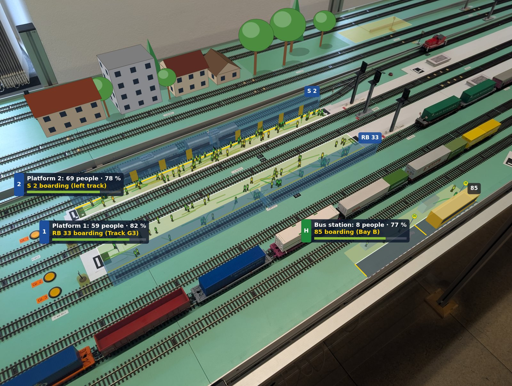

Big game · missions
The big game
One railway, many desks. Take a seat and live with what the others decide.
- 1 to 6 roles
- turns and shifts
- you or the computer
How it works
A mission seats several roles of the railway. Each seat is one role's game, played by you at this device or by the computer. What one role gives another (a fault report, a repair status, a track closure, a budget) is what the other has to work with.
Choose a mission and your seats, play it, watch what the roles give each other, and read the result. Slow roles decide in turns, fast roles work in shifts on one clock.
Missions
Loading the missions.
The seats
What the roles give each other
Nothing has passed between the roles yet.